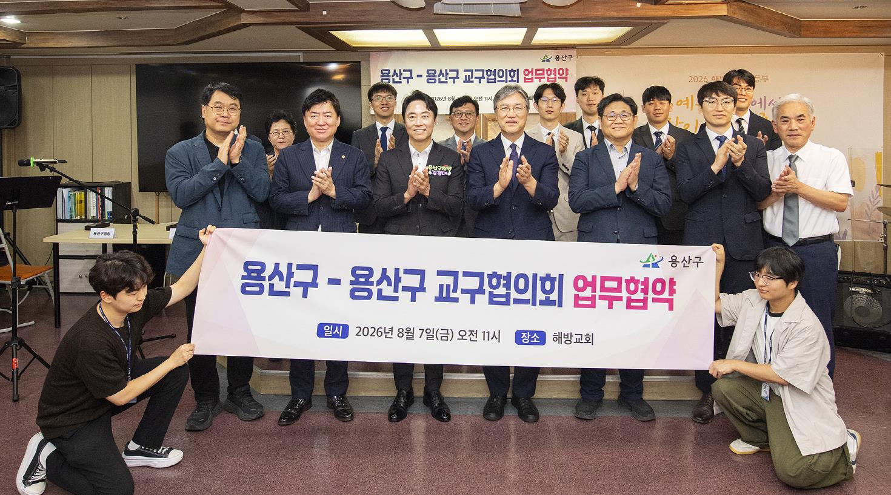

용산구, 교회 15곳 개방 폭염·한파 쉼터 확대…주말도 운영
민관 협력 생활권 쉼터, 취약계층 접근성 강화

[시사포커스 / 김재록 기자] 서울 용산구(구청장 김경대)가 지역 교회와 손잡고 폭염·한파 취약계층 보호를 위한 생활권 쉼터를 대폭 확대한다. 구는 10일 해방교회에서 용산구교구협의회와 '무더위·한파쉼터 확대 지정 및 운영을 위한 업무협약'을 체결하고, 지역 교회 15곳을 공식 쉼터로 지정했다고 밝혔다. 기존에 동 주민센터와 공원 등 공공시설 중심으로 운영되던 무더위·한파쉼터를 민간시설로까지 넓혀 주민 누구나 집 가까운 곳에서 쉬어갈 수 있도록 안전망을 강화한 조치다.
협약에 따라 참여하는 교회는 ▲후암교회 ▲해방교회 ▲신흥교회 ▲청파중앙교회 ▲성광교회 ▲서울비전교회 ▲선인중앙교회 ▲신창제일교회 ▲만리현교회 ▲한강중앙교회 ▲신용산교회 ▲시티미션교회 ▲삼애교회 ▲대성교회 ▲한남중앙교회 등 15곳이다. 쉼터는 구민 누구나 이용할 수 있으며, 주말을 포함한 매일 오전 9시부터 오후 6시까지 운영된다. 김경대 용산구청장은 "기후변화로 폭염과 한파가 구민의 생명과 안전을 위협하는 재난으로 자리 잡고 있다"며 "지역사회와의 협력을 바탕으로 구민 누구나 집 가까운 곳에서 안전하게 쉬어갈 수 있도록 생활권 쉼터를 지속적으로 확대해 나가겠다"고 말했다.
용산구는 특히 폭염과 한파에 취약한 어르신, 장애인, 노숙인 등 취약계층이 거주지에서 가까운 곳에서 편리하게 쉼터를 이용할 수 있도록 접근성을 높이는 데 초점을 맞췄다. 평일뿐 아니라 주말에도 이용 가능한 쉼터를 늘려 폭염과 한파 기간 내내 구민 보호에 공백이 없도록 할 방침이다. 구는 향후 용산구교구협의회와의 협의를 거쳐 참여 교회를 지속적으로 확대해 나갈 계획이며, 교회 측도 쉼터 공간 제공과 이용 안내 등에 협력하며 지역사회 안전망 구축에 힘을 보탤 예정이다.